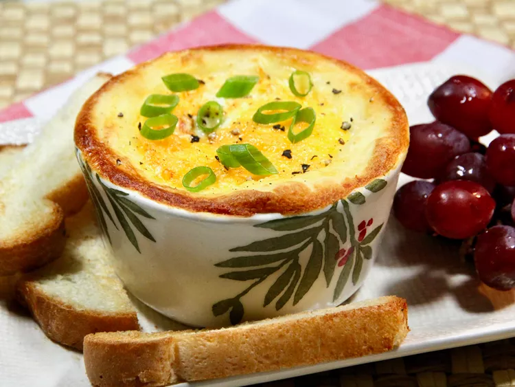

Leftover Mashed Potato Egg

About this dish!
These leftover mashed potato egg cups are a great way to use up mashed potatoes, and are quick and easy to assemble for breakfast or brunch. We like our eggs cooked until you can still dip a piece of toast into the yolk, but cook to your preference.
Ingredients
- 16 ounces of cooked mashed potatoes
- 5 large eggs
- 2 tsp of milk
- 4 thin pats of unsalted butter
- 4 tbsp of grated cheddar cheese
- 1 pinch of salt and black pepper
- 1 clove of sliced green onions or chives
Steps
- Preheat the oven to 220c.
- Spray 4 (6 ounce) ramekins with cooking spray. Place 4 ounces mashed potatoes into each ramekin. Using the back of a spoon, mold into nests, and brush with 1 lightly beaten egg.
- Break 1 of the 4 remaining eggs into each ramekin. Drizzle each with 1/2 teaspoon milk, top with 1 pat of butter, and 1 tablespoon Cheddar cheese.
- Cook until yolk is starting to set and cheese is melted, 15 to 20 minutes (cooking time will depend on how you want your eggs cooked). Remove from the oven, and let stand until residual heat finishes cooking the egg whites, 1 to 3 minutes.
- Season with salt and pepper, garnish with green onions or chives, and serve immediately.
Back to home